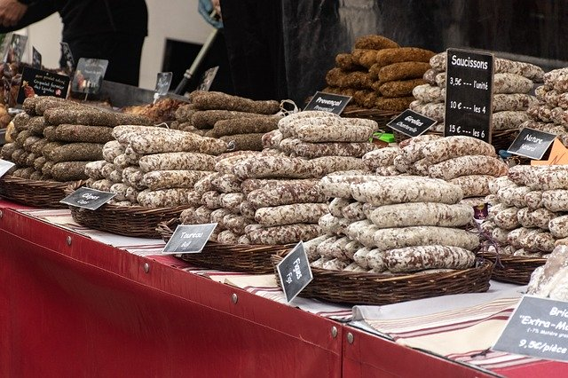
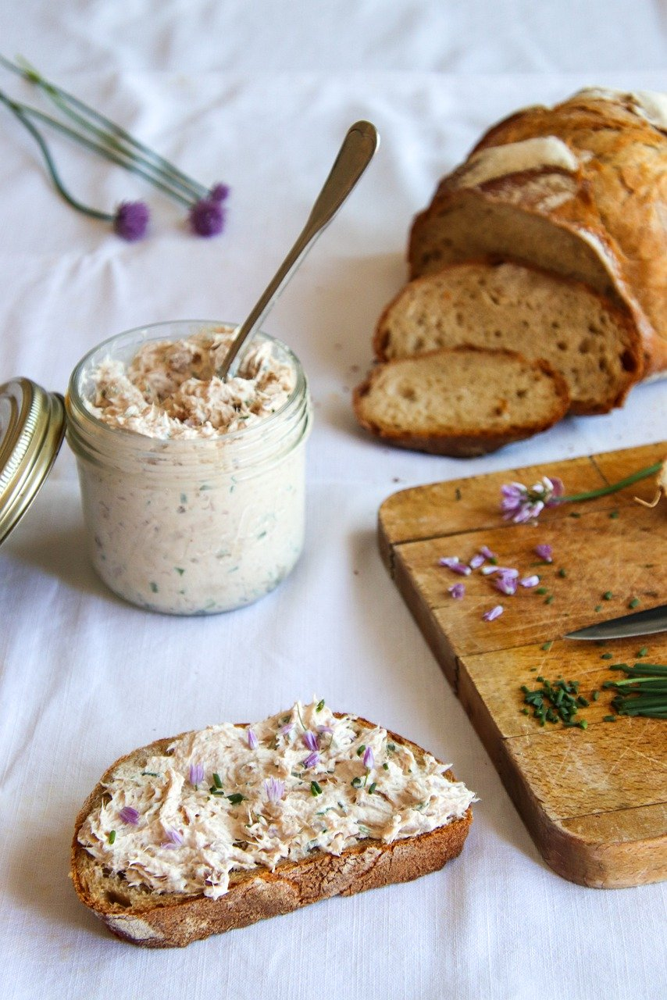
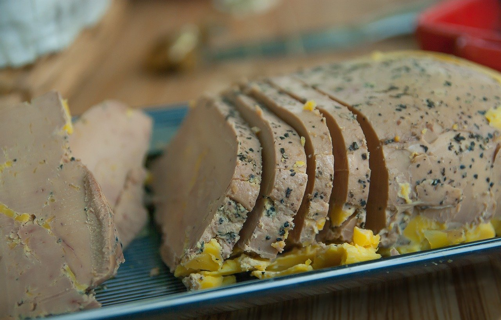

La Foire au Jambon
Parrainé par Jean Lassalle
Modal title
×
...
Le saucisson au poivre

Suivez cette liste pour reproduire chez vous le saucisson au poivre
Mon lien
Recette
Poivre
Porc
La passion saucisson
Mes vidéos
Les autres pêchés mignons
 